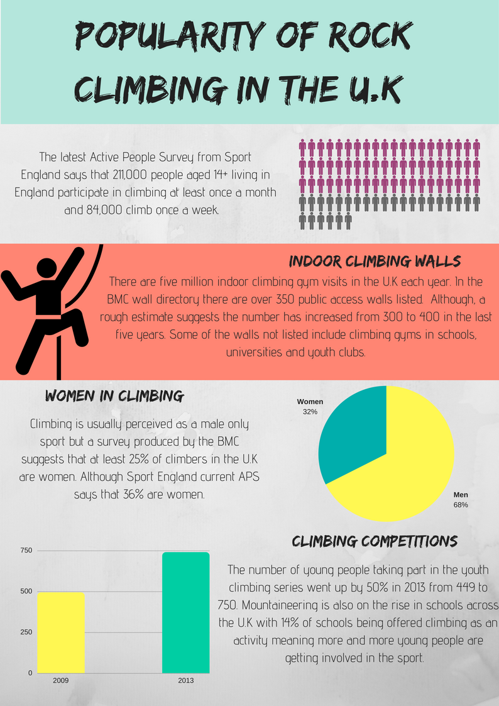
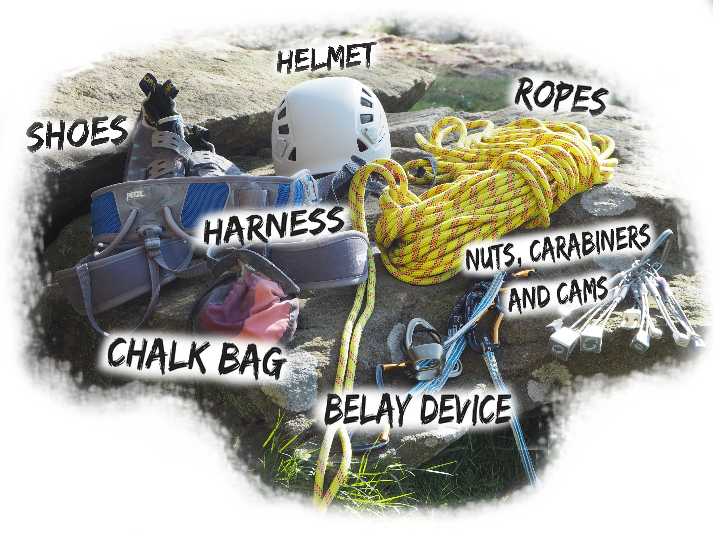

"We search out the most perfect pieces of rock. It’s amazing that these formations are so perfect for climbing on. It’s almost as if they were created for climbing...Just by finding the handholds, finding that line up the rock. Every climb is different, has its own unique set of movements and body positions. Climbing and my appreciation for nature are totally intertwined".
Chris Sharma
Whether your area of expertise is climbing the heights of Yosemite Valley or ascending a modest V-1 route down at the local bouldering centre, climbing doesn’t judge whether you succeed or fail. It gets both your mind and body working simultaneously, overwhelming you with a sense of accomplishment, thats why people love to do it.Over the past 10 years the sport of Rock Climbing has become ever more popular, once a niche sport, indoor bouldering centres have popped up all over the U.K and climbing is now set to make its Olympic debut in the Tokyo 2020 Olympics.There are many debates that argue the birth of climbing in the U.K but they all come back to one place… the Peak District National Park. Home to the most popular and challenging climbing routes in all of Europe. Thousands of adrenaline junkies travel from all over the world to climb and accomplish its unique crags made up of the finest ‘Eastern Grit’. Putting Sheffield at the heart of the U.K climbing scene.
Stats courtesy of The British Mountaineering Council(BMC)
Bouldering
Bouldering is the most simplistic yet the most technical style of climbing there is. It is rock climbing but stripped down to the bare essentials. It requires no ropes and no gear (but of course climbing shoes are recommended and maybe some chalk).It’s just you and the wall. Your hands being your only tool to help you on the wall.Many people say they have never tried bouldering before but it’s guaranteed they have. Ever climbed up, over or down anything as a child? Then you’ve bouldered. Meaning it is the perfect style for any beginner.Bouldering uses a mixture of balance, technique and strength, also a little problem solving to climb. Everyone will climb the same route differently, changing their body positioning and using holds in different orders to get to the top. Typically bouldering gyms offer climbs that are high enough to get that adrenaline pumping but not so high you hurt yourself, plus you have the safety mats to catch you if you fall.
Top Rope Climbing
Top rope climbing is the most common style of climbing used in indoor climbing walls. It is a great way for beginners to grasp the basics of climbing techniques with the rope being the little helping hand. It is used in situations where it would be dangerous to climb using other methods. The walls typically climbed are double floor height and above.It involves the climber climbing to the top whilst attached to a harness and a rope which runs all the way to the top. The rope is connected to an anchor and runs back down to the belayer who stands at the base of the route. The belayer is in charge of the ropes, letting out bit by bit as the climber ascends higher. This way if the climber falls it is almost impossible for them to hurt themselves.Once at the top the climber can abseil safely back down. Anyone can be a belayer with a little practice, you just have to know your climbing knots. Usually you would need someone to belay you but many climbing centres now have auto belays where a machine helps you on your way all you have to do it clip in and GO!
Trad Climbing
Unlike top rope climbing traditional climbing or trad climbing offers the climber an undeniable sense of freedom. This is where the adrenaline starts to flow, this is serious stuff but also very fun!!. In trad climbing there is a lead climber which usually is the more experienced climber. They go up the crag first with a harness and rope with the freedom to decide the route of the climb. Using a mixture of cams, hexes and nuts they place them into cracks and weak spots in the wall before clipping themselves in every meter or so. Meaning the climber is free climbing the way up, trusting their judgement of whether or not the nuts will hold them if they fall. The last to climb usually takes out the nuts on the way down.
Sport Climbing
Sport climbing is light fast and agile. Climbers climb to the top clipping themselves in to pre drilled bolts, meaning minimal equipment is needed. Unlike traditional climbing where the climber puts in their own nuts and bolts. Allowing sport climbers to work on technique and speed without the worry that they are going to fall.
Free Solo Climbing
Free climbing or solo climbing involves the climber performing a route without the aid of ropes or equipment. Relying entirely on their abilities to climb. Unlike bouldering climbers climb to unsafe heights where one single mistake could lead to a fall and result in their death. This type of climbing is not very common in sheffield and the Peak District, as free soloists are usually adrenaline junkies and want to climb the biggest and the best. Where the Peak District does have some high climbs, Yosemite Valley in California U.S has some of the most iconic free solo climbs in the world topping anything the Peaks has to offer. El Capitan is one of the most famous in the valley it is over 3000 ft tall that's just over two Empire State buildings stacked on top of each other high.
Speed Climbing
Speed is the ultimate goal. With this type of climb it challenges the climber to get to the top as fast as humanly possible. Usually done under the conditions of top rope, meaning the climber has no other worries but to get to the top. In 2016 the international Olympic committee approved speed climbing to take its place in the 2020 Tokyo Olympics.
Equipment
Climbing outside for the first time can be both a scary and an exciting experience, not to mention very expensive. The equipment doesn't come cheap, which is why it is useful to join climbing clubs or find a climbing partner with existing equipment you can share for the time being. Climbing forums or notice boards in climbing gyms are good places to find partners. When it comes to buying your own equipment you can sometimes get good deals online, especially things you may need multiple quantities of such as your nuts, carabiners and cams. Most climbing gyms have their own shops, The foundry and Climbing works included and they also sometimes offer discount if you have a membership with them. Outdoor sports shops such as Decathlon and Blacks are also good places to look.
A climbing guide is also good to bring along but if its a rock and it’s climbable but not in the guide book, CLIMB IT ANYWAY!
If you decide just to dabble in a little bit of outdoor bouldering don't forget your shoes and chalk. Obviously when you climb outside you don't have the added protection of the mats incase you fall, these can be rented from climbing gyms or you can buy your own for a small fortune.
Foggatt Edge is the second most popular edge to climb in the Peak District National Park. It has spectacular views over Derwent Valley and is known for it’s technically challenging grit stone slabs, a rare and unusual formation for grit stone that was quarried. The edge is low lying meaning it makes the perfect Sunday afternoon climb. It has over 447 recorded routes catering for all abilities.
Stanage Edge is located to the West of Sheffield near to Hathersage and is the longest gritstone crag the U.K has to offer. Reaching over 25 meters high and stretching for over a mile. It’s 2000 or so ‘Trad’ routes make it one of the post popular climbing spots in the Peak District National Park. Climbing gained popularity here in the late 80’s as the moors surrounding the edge had been privately owned before that meaning early climbers were forced to trespass and climb in secret by bribing the game keepers.
Todate Stanage is known for its backdrop of breathtaking panoramic views and it’s diverse range of routes made up of complex formations of slabs wall cracks and overhangs. Attractive to the more experienced, versatile climber. The majority of the crag is west facing meaning it often gets sun all day long but don’t be fooled the edge does catch the westerly wind making the temperature appear lower. Friction decreases with the air temperature making it’s harder routes easier to climb on cooler days.
Climbers come from far and wide to climb Millstone’s unearthly cracks. The edge was heavily quarried leaving vast walls of gritstone with extraordinary smooth corners. It’s name is quite fitting seeing as some of the old millstones can be seen lying around. It’s famous cracks started out hair-line and were used by traditional climbers to anchor cams and pegs. Over the years this has weakened the cracks causing them to become wider, wide enough for fingers and just enough to get your toes in their. Meaning Milstone is the most treasured free climbing spot in the Peaks.
The climbing works opened back in 2006 and was the biggest bouldering centre in the world,other centres have opened since but it still remains one of the biggest. It was awarded National Performance Centre status by the BMC and it is the host of the yearly Rab CWIF bouldering competition. The competition is held over two days giving amatures the chance to watch along side world famous climbers, the first prize winner usually gets a cash prize of up to £2000. The Mini Climbing Works is an expansion of the main centre and caters for children meaning young’uns can get involved and not feel daunted by the bigger walls. But it’s not just for kids... if you're a beginner and don't want to jump in at the deep end it’s a good place to start.
The Foundry Climbing Centre was established in 1991 and was the first dedicated climbing wall in the U.K setting the standard for 100’s of other walls across the country. It is the most famous climbing wall in the U.K for this reason. According to the British Mountaineering Council Many climbing walls in the U.K marvel in around 30,000 visits a year but according to the foundry they get around 90,000 plus visits a year. The Foundry has the Moon Board which is so much fun for any climber. It is an LED app driven creation where the climber can download the app straight to their phone, choose problems set by climbers all over the world and the LED’s will light up the way on the wall. VERY COOL!
Here is what the Foundry has to offer:
- Bouldering routes, four circuits for all abilities. 70-18 problems with grades set from F5 to F7C+
- Toprope climbing with 22 lines on slabs and vertical walls with routes ranging from F3 to F7A
- Lead climbing, 47 leads on vertical to 40 degree overhanging walls. With grades ranging from F4 to F8C
- Autobelays, six auto-belays on both vertical and verhanging walls with routes ranging from F5 to F7B
Awesome walls in Sheffield was the first ever climbing centres to be awarded the National Performance Centre award by the British Mountaineering Council and now has centres in Liverpool, Stockport and Stoke. Making it one of the first chain climbing centres in the U.K. Awesome Walls Sheffield is great as it has a little bit of everything, bouldering, top rop, auto belays etc.. Plus memberships are free!!
Here is what it has to offer
- 104 lines (possible 312+ routes)
- 2 bouldering areas
- Lead walls 14m-15.5m in height
- Major 23m competition wall overhanging by 12m
- Auto belay climbing area
- Dedicated children's climbing zone
- Free membership
- Customer loyalty card
- Free Wi Fi
Climbing is amongst four new sports to make its debut at the Tokyo 2020 Olympic games. The announcement was long awaited by the climbing community worldwide. Participating climbers will be judged by the combination of scores from 3 disciplines including, Bouldering, Lead climbing and of course Speed climbing. Given the majority of climbers specialise in one category of climbing, the Olympics will set the president for a whole new generation of climbers. Making the athletes push themselves harder and faster.
One of the athletes that will be taking part is 25 year old Shauna Coxley , who won the Bouldering World cup in 2016 and 2017. She has been on the wall since the age of 4 and often trains in Sheffield and the Peaks.
In a quick chat she said:
‘’The Olympic line up is a great representation of the sport, it has a little bit of everything.’’
‘’Being apart of the Olympics is something I never thought I would have to opportunity to do, it was a massive shock when I was told.’’
‘’I have a lot to work to do, bouldering is my main discipline and the one I’m good at, I mean, it’s what got me into the Olympics in the first place. My trainor has an amazing training schedule planned, I’ve been working really hard to make sure I am the best in all the categories but I think we will have to wait and see.’’